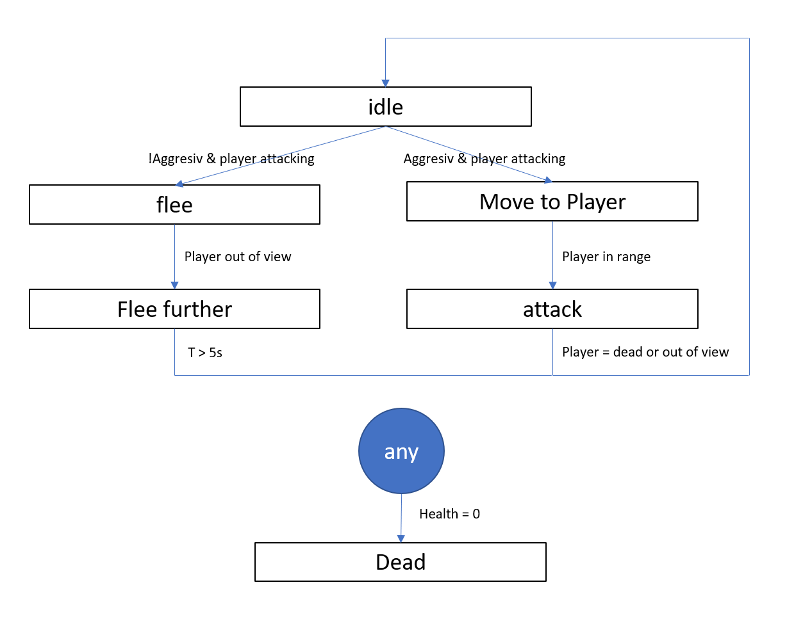

Implementing Whalebehaviour

Look over my shoulders while I'm implementing the whale behaviour using a statemachine.
How to implement a statemachines
A state machine is a concept which can be used to describe and program the physical behaviour of any object which has a countable amount of states. See Wikipedia, "Finite Statemachine" for more details. The easiest way to explain the idea behind a statemachine is by using an example everyone knows. In this case we will use a simple electrical swing door.
The states of a door
We start by itentify the different states of the door:1. Closed (position closed, door angle = 0°)
2. opening (turnig door in positiv sense)
3. Open (position open, door angle = 90°)
4. closing (turnig door in negativ sense)
These are all the possible states a door can reache. We can use this combined with transactions to actually write code in C# which can be used to controll a door.
The Transactions in between
Transactions are used to get from one state to another. Lets asume, that our Door has a button infront of the door. If it gest pushed we want the door to slide open,
then wait for a given amount of time (lets say 5s) and then slide back to closed. This defines the following transactions:
1. From closed to opening -> Button "open door"
2. From opening to Open -> Door is open (i.e. defined by the rotation of the door hinch > 85°)
3. from Open to closing -> Door was open for 5s
4. From closing to Closed -> Door is closed (i.e. defined by rotation of the door hinch < 5°)
Finally draw your statemachine to check, document and evtentually improve:
Finally code it!
Example Statemachine code for a simple door (pseudo code!)
[SerializableField]
private DoorStates doorState = DoorStates.closed; //Door is initially closed
private float timeDoorWasOpen = 0;
public void Update()
{
switch (doorState)
{
case DoorStates.closed:
//Wait until door button is pressed
if (BTN_open_door)
{
doorState = DoorStates.opening;
}
break;
case DoorStates.opening:
TurnDoorMotorLeft(); //handle door opening
if(door.transsform.rotation.z > 85)
{
doorState = DoorStates.open;
timeDoorWasOpen = Time.FixedTime; //Get time as door was (almoust) open
}
break;
case DoorStates.open:
//wait 5s
if(TimeoutException.FixedTime - timeDoorWasOpen > 5)
{
doorState = DoorStates.closing;
}
break;
case DoorStates.closing:
TurnDoorMotorRight(); //handle door closing
if (door.transsform.rotation.z < 5)
{
doorState = DoorStates.closed;
}
break;
default:
doorState = DoorStates.closing;
Debug.LogError("unhandled state, force door into initial state 'closed'");
break;
}
}
public enum DoorStates
{
open, opening, closed, closing
}
Whale behaviour statemachine
With the explained technique it was easy to implement the above Statemachine. You can see the result bellow. I may point out, that this is the example of a none aggresiv whale witch flees from the player. Aggresive whales are still on the todo-list. Further the color change displays the current state of the whale. Oh and did I mention I changed the background a little bit ;-).